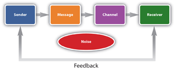
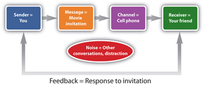
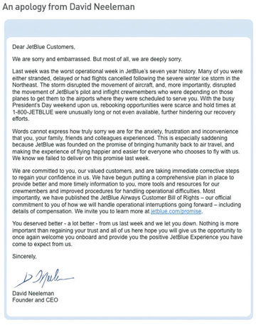
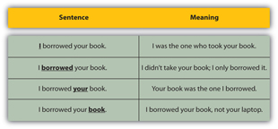
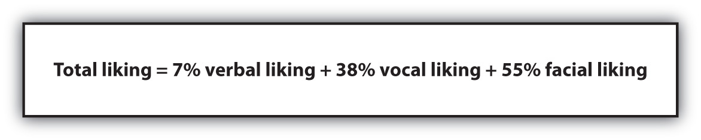

A text message.
A voice mail.
A passing comment.
A Facebook post.
An unreturned phone call.
Have you ever had one of these communications be misinterpreted? You meant one thing, but your friend thought you meant something else? Sometimes, the miscommunication can result in the confusion of a meeting time or a place to get together. Or worse, it can be entirely misunderstood and may have a negative impact on your relationship.
CommunicationThe exchange of information or ideas between sender and receiver., the exchange of information or ideas between sender and receiver, is a challenging aspect in your personal life, at school, and especially in selling. Today, it’s even more complex with business being conducted around the world and with varying communication methods. In this constant, high-speed business environment, communication blunders can cost you more than you might think. Did you ever hear the saying, “You only have one chance to make a good first impression”? It couldn’t be truer when it comes to communication: The first two seconds of communication are so important that it takes another four minutes to add 50 percent more information to an impression—positive or negative—within that communication.Dave Rothfield, “Communicating Simply, Directly Will Improve You, Your Business,” Orlando Business Journal, May 15, 2009, http://orlando.bizjournals.com/orlando/stories/2009/05/18/smallb2.html?t=printable (accessed July 12, 2009). Communication has often been referred to as a soft skillA term that relates to a person’s communication skills, social graces, personality traits, language abilities, and the ability to work with others., which includes other competencies such as social graces, personality traits, language abilities, and ability to work with other people. Soft skills also encompass emotional intelligenceA person’s ability to manage herself as well as her relationship with others so she can live her intentions., which Adele B. Lynn, in her book The EQ Interview: Finding Employees with High Emotional Intelligence, defines as “a person’s ability to manage herself as well as her relationship with others so she can live her intentions.”“Interviewing for Emotional Intelligence,” Selling Power Hiring & Recruiting eNewsletter, October 15, 2008, http://www.sellingpower.com/content/newsletter/issue.php?pc=878 (accessed March 16, 2010). But in today’s business world, communication has become part of the new “hard skillsTechnical knowledge required to perform a specific job.” category, a technical job requirement, because of the critical role that it plays in business.Patricia M. Buhler, “Managing in the New Millennium: Six Tips to More Effective Communication,” Supervision 70, no. 7 (July 2009): 19. According to Peter Post, great-grandson of the late Emily Post, “Your skills can get you in the door; your people skills are what can seal the deal.”The Emily Post Institute, http://www.emilypost.com/business/index.htm (accessed July 13, 2009).
In Chapter 3 "The Power of Building Relationships: Putting Adaptive Selling to Work" you learned about the importance of relationships. In fact, it is almost impossible to be in sales without developing relationships inside your organization and with your customers. Your relationship skills build trust, allow you to be a true partner, and help solve your customer’s problems; both internal trust and external communication are essential keys to your ability to deliver on your promises. How are these qualities intrinsically related? The way in which you communicate can determine the level of trust that your colleagues or customers have in you.Gail Fann Thomas, Roxanne Zoliln, and Jackie L. Harman, “The Central Role of Communication in Developing Trust and Its Effect on Employee Involvement,” Journal of Business Communication 46, no. 3 (July 2009): 287.
Just like relationships are the cornerstone of trust, communication is the foundation of relationships. But it’s difficult to establish and develop relationships; it takes work and a lot of clear communication. You might think that sounds simple, but consider this: Nearly 75 percent of communications that are received are interpreted incorrectly. At the same time, interestingly, many people consider themselves good communicators. The telling disconnect occurs because people tend to assume that they know what other people mean or people assume that others know what they mean. This is compounded by the fact that people tend to hear what they want to hear—that is, a person may interpret elements of a conversation in such a way that the taken meanings contribute to his already established beliefs. When you put these assumptions together, communication can easily become “miscommunication.”Patricia M. Buhler, “Managing in the New Millennium: Six Tips to More Effective Communication,” Supervision 70, no. 7 (July 2009): 19.
The standard model of communication has evolved based on two parties—the senderPerson who originates a message or communication. and the receiverPerson who is the intended recipient of a message or communication.—exchanging information or ideas. The model includes major processes and functions categorized as encodingThe process of converting a message to be sent to a receiver into a symbolic form such as letters, pictures, or language., decodingThe process of converting an encoded message into meaning on the part of the receiver., responseAn action taken by the receiver in response to a message., and feedbackThe method of providing information back to the sender in response the message.. In addition, the model accounts for noiseAnything that can interfere with the communication of a message between sender and receiver., which symbolizes anything that might disrupt the sending or receiving of a message.George E. Belch and Michael A. Belch, Advertising and Promotion: An Integrated Marketing Communications Perspective, 8th ed. (New York: McGraw-Hill Irwin, 2009), 146. The communication model is shown in Figure 5.1 "Traditional Communication Process".
Figure 5.1 Traditional Communication ProcessSource: Adapted from Michael R. Solomon, Greg W. Marshall, and Elnora W. Stewart, Marketing: Real People, Real Choices, 5th ed. (Upper Saddle River, NJ: Pearson Prentice Hall, 2008), 378.
The model helps describe exactly how communication takes place. For example, if you send a text message to your friend to ask him if he wants to go a movie, you are the source, or sender, of the message. You translated or encoded your message into text characters. A personal digital assistant (PDA) such as a BlackBerry, iPhone, or cell phone is the channelThe method by which a message is communicated., or the method by which you communicated your message. Chances are, if your friend does not have his PDA or cell phone with him, your message will not reach him, and you might miss the movie. So in this example, the PDA or cell phone is the channel. When your friend, the receiver, reads the message, he decodes it or determines what you meant to communicate, and then he responds. If he was talking to another friend while he was reading your text message and didn’t see the time the movie started, that conversation would be considered noise because it would be interfering with the communication of your message. Noise interferes with communication or causes distraction, whether it is heard or seen. When your friend responds to you by saying that he wants to go see the movie, he is providing feedback (or a response to your message). Figure 5.2 "Communication Process Example" shows this example applied to the communication model.
The same thing can happen in a selling situation. For example, if you call a prospect to set up a meeting, you are the sender. The message is the meeting information (e.g., date, time, and place) that you encode into words. The channel is the telephone, and the receiver is the prospect. It sounds easy enough. Assume, however, that the prospect responds to you and agrees to the meeting. But because he was checking his e-mails while he was talking to you (which is noise), he puts the wrong time on his calendar. When you come for the appointment, he’s out of the office, and your sales call doesn’t take place. Now you have to start the communication process all over again. This is only an example of simply setting up a meeting. Now imagine the challenges if you started explaining the features and benefits of a complex product or negotiating a contract. You can see why understanding the communication process is so important in selling.
Figure 5.2 Communication Process Example
How do you avoid the pitfalls of poor communication and build productive business relationships? It’s best to always communicate in a timely manner and in the method that your customer prefers. That may be easier said than done. Here are six tips that can help you increase your chances of making your communications effective.
One of the key elements of being a good communicator is having empathy. That means thinking about your communication from the receiver’s point of view. It’s focusing on what she wants to learn as a result of your communication, not what you want to tell her. Empathy is about demonstrating that you care about the other person’s situation. Think about when you received your acceptance letter from your college; the letter probably mentioned what an exciting time it is in your life. The author of the letter demonstrated empathy because she focused on the situation from your perspective. A purely factual letter, without empathy, might have said that you were accepted and that now the school can make their budget since they met their enrollment goal. That would be quite a different letter and would make you feel very different (and probably not very welcome). Although it’s always best to be candid, you should deliver information from the receiver’s point of view and address her concerns.Steve Adubato, “Empathy Is Essential to Effective Communication,” NJBiz, http://www.stand-deliver.com/njbiz/2008/020408.pdf (accessed July 14, 2009).
Empathy is an integral part of emotional connection, one of the elements of a brand that you learned about in Chapter 1 "The Power to Get What You Want in Life". (Keep in mind that when you are in sales, you are the brand to the customer.) It is especially important to have an emotional connection and empathy when apologizing to customers. Chances are the customer is already angry, or at least disappointed, when you are not able to deliver as expected. You can express empathy in your communications by saying or writing, “You have every right to be upset. I understand how you must feel. I apologize for the late delivery. Let’s work on a new process that will help prevent it from happening again.”Mary Ellen Guffey, Business Communication, 6th ed. (Mason, OH: South-Western Publishing, 2008), 280. Some of the best brands have disappointed their customers but showed empathy when they apologized. For example, the letter from then JetBlue CEO David Neeleman shown in Figure 5.3 "Letter of Apology from JetBlue" is an example of a letter of apology that demonstrates empathy and emotional connection and also offers corrective action.
Figure 5.3 Letter of Apology from JetBlueJetBlue Airways, “An Apology from David Neeleman,” http://www.jetblue.com/about/ourcompany/apology/index.html (accessed February 18, 2010).
Quick responses, whether verbal or via electronic methods, can be less effective than those that are considered and can even cause misunderstanding. Although a timely response is critical, it’s worth a few minutes to think about exactly what you want to say before you say it (or type it).
It seems obvious, but not everyone is clear in his communications. Sometimes, people are trying to avoid “bad news” or trying to avoid taking a stand on a topic. It’s always best to avoid confusion and clearly say what you mean by framing your message in a way that is easily understood by all receivers. It’s also a good idea to avoid buzz words (or jargon)Words, phrases, or acronyms that are used only in a company.—those words, phrases, or acronyms that are used only in your company. If they can’t be avoided, explain them in the same communication terms. You should also avoid jargon on your résumé and cover letter—help your reader see your brand story at a glance without needing a decoder ring.
Business communication should be short and to the point. Your customers are busy and need information—whether it’s a proposal, report, or follow-up to a question—in a clear, concise way. It’s best to avoid being verbose, especially in any business plans, proposals, or other significant documents.Patricia M. Buhler, “Managing in the New Millennium: Six Tips to More Effective Communication,” Supervision 70, no. 7 (July 2009): 19.
If you go to dinner at Cheesecake Factory and there is a wait to get a table, the hostess will hand you a portable pager and tell you that the wait will be twenty to twenty-five minutes. Perfect. You have just enough time to run a quick errand at a nearby store at the mall and be back in time to get your table. If, on the other hand, she told you that you will be seated shortly, you might have an expectation of being seated in five to ten minutes. Meanwhile, “shortly” might mean twenty to twenty-five minutes for her. You would probably forgo running your errand because you think you are going to be seated soon but end up waiting for twenty-five minutes and being frustrated. Being specific in your communication not only gives clarity to your message but also helps set your customer’s expectations. In other words, your customer won’t expect something you can’t deliver if you are clear about what exactly you can deliver and when. The same is true for prices. For example, if you order from the menu at the Cheesecake Factory, you know precisely what you will get to eat and how much it will cost. However, if there is a menu special that you heard about tableside, but weren’t told how much the dish was, you might be surprised (and disappointed) when you receive the check. Specificity avoids surprises and sets expectations. See some examples in Table 5.1 "General versus Specific Statements" of general statements that can be communicated more effectively when made into specific statements.
Table 5.1 General versus Specific Statements
| General Statement | Specific Statement |
|---|---|
| I’ll get back to you shortly. | I’ll get back to you by Tuesday. |
| It will only take a few minutes. | It will take less than 5 minutes. |
| It will cost about $5,000 plus installation. | The cost is $4,800 plus $200 for installation. |
| Everything is included. | It includes your choice of entrée, vegetable, dessert, and coffee. |
Timing is everything in life and most certainly in selling. It’s best to be proactive with communication, and if you owe someone a response, do it sooner rather than later. If you are slow to respond to questions and communication, it will be difficult to develop trust, as prolonged responses may seem to imply that you are taking action without informing the customer what it is you are doing. Timing is especially important when you are communicating a negative response or bad news. Don’t put it off; do it as soon as possible and give your customer the benefit of complete information.
At the beginning of each relationship, ask your customer how he prefers to communicate. Getting the answers to these simple questions will save time and confusion throughout your relationship and help ensure good communication.
While you may think you are ready to communicate, it’s a good idea to stop and listen first. Creating your message is only half of communication; listening is the other half. But it’s difficult to listen because we listen faster than we speak—that is, based on what the other person is saying, we are already constructing responses in our minds before they have even finished. As a result, many people are guilty of “listening too fast.”Jeffrey J. Denning, “How to Improve Your Listening Skills, Avoid Mix-ups,” Ophthalmology Times 26, no. 10 (May 15, 2001): 28. Cicero once said that it is good thing that humans were given one mouth and two ears, in light of the way we use them.Patricia M. Buhler, “Managing in the New Millennium: Six Tips to More Effective Communication,” Supervision 70, no. 7 (July 2009): 19.
Listening, in fact, is so important that companies like Starbucks believe that it may directly improve profits. According to Alan Gulick, a Starbucks Corporation spokesperson, if every Starbucks employee misheard one $10 order each day, it would cost the company one billion dollars in a year.[citation redacted per publisher request]. That’s why Starbucks has a process to teach their employees how to listen. Although listening may seem passive, it is actively linked to success: One study conducted in the insurance industry found that better listeners held higher positions and got promoted more than those who did not have developed listening skills.Beverly Davenport Sypher, Robert N. Bostrom, and Joy Hart Seibert, “Listening, Communication Abilities and Success at Work,” Journal of Business Communication 26, no. 4 (Fall 1989): 293. So it’s worth it to hone your listening skills now so that when you get into the business world you can be successful. Here are a few tips:
Listen More, Talk Less
(click to see video)This video highlights some challenges and tips for listening in sales.
Source: Josaine Feigon, http://www.tele-smart.com
Are You a Good Listener?
Take this quiz to find out if you are a good listener.
http://www.chuckbauer.com/resources/assessments/are-you-listening-an-assessment
It’s important to remember that you will be communicating with many different people about many different topics in selling. Sometimes, you will be communicating one-on-one and sometimes you will be communicating with a group. Just as people have varying social styles (as you’ve learned in Chapter 3 "The Power of Building Relationships: Putting Adaptive Selling to Work"), it’s important to know that people also absorb information differently. Research conducted in the 1970s indicates that people comprehend information in four distinct ways:
This can be a helpful road map of the elements you will want to include in your communications, especially if you are communicating with a group, since you may not know everyone’s best method of absorbing information. It’s been proven that if people don’t receive the type of communication they prefer, they tend to tune out or reject the information.
You’ve probably noticed that both people and brands communicate the same message multiple times and usually in multiple ways. Creative repetition is key to successful communication. Think about the advertising Pepsi ran when it launched its new logo in early 2009; you most likely saw the television commercial during the Super Bowl, noticed a billboard in a high-traffic area of a major city, received an e-mail, saw banner ads on the Internet, reviewed the commercial on YouTube, and saw the new logo on the packaging. Pepsi’s ad campaign illustrates the “three-times convincer” concept, which claims that 80 percent of people need to be exposed a message three times to buy into it, 15 percent need to be exposed to it five times, and 5 percent need to be exposed to it up to twenty-five times.Natalie Zmuda, “Pepsi, Coke Try to Outdo Each Other with Rays of Sunshine,” Advertising Age, January 19, 2009, http://adage.com/abstract.php?article_id=133859 (accessed July 14, 2009). You may have seen the message so many times that it’s hard to remember what the old logo even looked like.
It is important to use multiple types of communication so that repetition does not become boring like a broken record. There are three types of communication: verbalCommunication that involves speaking to one or many people., which involves speaking to one or many people to convey a message; nonverbalCommunication that includes body language and other observations about people., which includes body language and other observations about people; and writtenCommunication that is done by way of printed words on paper or a screen., which includes a message that is read in hard copy, e-mail, text message, instant message, Facebook, Twitter, blog, or other Internet-based written communication.[citation redacted per publisher request]. Varying the usage of these mediums can help ensure your customer’s attention, but you must carefully develop each skill separately to communicate effectively.
An introduction, a presentation, a telephone conversation, a videoconference call: these are all examples of verbal communication because information is transmitted orally. Despite the ubiquitous use of technology in the business world, verbal communication is the most common method of exchanging information and ideas. Verbal communication is powerful, fast, and natural and includes voice inflections that help senders and receivers understand the message more clearly. The downside to verbal communication is that once it is spoken, the words are essentially gone; they are preserved only in the memory of those present, and sometimes the memories of the specific words spoken vary dramatically. The he-said-she-said argument is an example of this. No one really knows who said what unless the words are recorded. Recall is rarely exactly the same between two or more people.
Voice inflectionVerbal emphasis on certain words., the verbal emphasis you put on certain words, can have a significant impact on the meaning of what you say. In fact, the same words can take on completely different meaning based on the inflection you use. For example, if you say the sentence in Figure 5.4 "The Impact of Intonation" with an inflection on a different word each time, the sentence communicates something completely different each time.
Figure 5.4 The Impact of Intonation
Source: Based on ideas in Kiely, M. (October, 1993). When “no” means “yes.” Marketing, 7–9.
You may also enjoy hearing recognized selling expert Zig Ziglar discuss the importance of intonation in a sales call.
Zig Ziglar Says It Best
It’s not what you say; it’s how you say it.
Verbal communication may take place face-to-face, such as an in-person conversation or group meeting, speech, or presentation. It could also take place by phone in an individual conversation, a conference call, or even a voice mail. Other forms of verbal communication include videoconferencesA meeting that takes place in at least two remote locations and includes technology support to see and hear people in all locations simultaneously., podcastsAn audio broadcast transmitted via an MP3 player., and WebinarsA meeting that takes place on the Internet that allows participants in remote locations to view what is on the screen and hear the speaker and ask questions., which are increasingly common in business. All these methods allow you to use inflection to communicate effectively. Face-to-face meetings also provide the opportunity to use and interpret other visual cues to increase the effectiveness of your communication.
Verbal communication is especially important throughout the steps of the selling process. Your choice of words can make the difference in someone’s decision to first hear your sales presentation, and your presentation can determine whether that person will purchase your product or service. You will learn more specifically about how communication is used throughout the selling process covered in later chapters.
Imagine that you are in a retail store buying a suit for an interview. When the salesperson approaches you, she smiles, makes eye contact, and shakes your hand. You respond positively. You notice that she is dressed professionally, so she makes you feel as if you will receive good fashion advice from her. When you make your choice, the tailor comes over wearing a tape measure around his neck. You know he is a professional and you can trust him to alter your new suit properly. On the other hand, if the salesperson waits on you only after you interrupt her personal phone call, doesn’t make eye contact or shake your hand, acts as if she is bored being at work, and is dressed in worn jeans and flip-flops, it’s unlikely that you trust her to help you choose your suit.
You have, no doubt, used and noticed nonverbal communication in virtually every personal encounter you have had. Think about it: A gesture, a smile, a nod, eye contact, what you are wearing, the fact that you are frequently checking your cell phone for text messages, and how close you stand to someone are all examples of nonverbal communication.
Say versus Do
(click to see video)This video describes the difference between verbal and nonverbal communication.
Source: eHow.com
Nonverbal communication is extremely powerful. In fact, some studies indicate that the influence from nonverbal communication such as tone and visuals can have a greater impact than the spoken words. Dr. Albert Mehrabian, a famed psychologist and professor emeritus of psychology at University of California, Los Angeles, is considered a pioneer in the area of body language and nonverbal communication. His research includes an equation, called the Mehrabian formulaFormula used to explain situations in which verbal communication and nonverbal communication do not match; in other words, when facial expressions contradict words, people tend to believe the facial expressions.,Albert Mehrabian, “Silent Messages,” http://www.kaaj.com/psych/smorder.html (accessed July 15, 2009). that is frequently used to define the relative impact of verbal and nonverbal messages based on experiments of communication of feelings and attitudes. Dr. Mehrabian developed the formula shown in Figure 5.5 "The Mehrabian Formula" to define how communication takes place.
Figure 5.5 The Mehrabian Formula
The Mehrabian formula is used to explain situations in which verbal communication and nonverbal communication do not match. In other words, when facial expressions contradict words, people tend to believe the facial expressions.“Mehrabian’s Communication Research,” Businessballs.com, http://www.businessballs.com/mehrabiancommunications.htm (accessed July 15, 2009).
In some countries, you might bow when you meet someone; in others you might kiss; but when you meet someone for a business meeting in the United States, it’s best to shake hands.Terri Morrison, “Kiss, Bow, or Shake Hands,” http://www.getcustoms.com/2004GTC/Articles/new011.html (accessed July 23, 2009). Although fist bumps and high fives may be trendy as friendly greetings, neither is appropriate in a business setting.
Here’s a networking tip: When you shake hands with people at a meeting, they are two times more likely to remember you than if you don’t shake hands, according to a recent study conducted by the Incomm Center for Trade Show Research.Rachel Zupek, “The Worst Way to Shake Hands,” CNN.com, http://www.cnn.com/2007/LIVING/worklife/11/05/cb.hand.shake/index.html (accessed July 13, 2009).
The exact history of the handshake is unknown; however, at one time it was used as method to prove that you had no weapons in your hands.Rachel Zupek, “The Worst Way to Shake Hands,” CNN.com, http://www.cnn.com/2007/LIVING/worklife/11/05/cb.hand.shake/index.html (accessed July 13, 2009). A good handshake is essential in business; it is the first nonverbal cue that you give to the person with whom you are meeting. It’s so important to have a good handshake that a recent study conducted at the University of Iowa showed that during mock interviews, those students who scored as having a better handshake were also considered more hirable by interviewers. According to Greg Stewart, a business professor who conducted the study said, “We found that the first impression begins with a handshake and sets the tone for the rest of the interview.”“Good Handshake Key to Interview Success,” BC Jobs, http://www.bcjobs.ca/re/career-advice/career-advice-articles/interview-advice/good-handshake-key-to-interview-success (accessed July 12, 2009).
Do you think you have a good handshake? Believe it or not, it’s worth practicing your handshake. Here are five tips for a good handshake:
Shake on It
What does your handshake say about you?
Do you use your hands when you talk? If so, you are using body language to help make your point. But body language includes more than talking with your hands. Body languageNonverbal communication using body elements such as gestures, facial expressions, eye contact, and proximity. is what we say without words; nonverbal communication using your body includes elements such as gestures, facial expressions, eye contact, a head tilt, a nod, and even where and how you sit. Body language can indicate an unspoken emotion or sentiment that a person might be feeling either consciously or subconsciously. Body language can indicate if you are listening to someone and are engaged in what he is saying, disagreeing with him, or getting bored. (You might want to think twice about the body language you are using in class.) It’s important that you are aware of what you communicate with your body language and to understand and respond to the cues you are getting from someone else’s body language.
Here are some common examples of body language and what they mean.Kathryn Tolbert, “What We Say without Words,” Washington Post, http://www.washingtonpost.com/wp-dyn/content/gallery/2008/06/23/GA2008062301669.html (accessed July 15, 2009).,Neal Hendes, “How to Read Body Language: Ten Tips,” EzineArticles, http://ezinearticles.com/?How-to-Read-Body-Language—Top-10-Tips&id=991635 (accessed July 15, 2009).
Body language is not just an interesting topic to consider; it’s a proven science that can help you improve your communication. If you would like to see how body language is used in everyday life, watch this video featuring Tonya Reiman, national television commentator and author of The Power of Body Language.
Tonya Reiman, Body Language Expert
(click to see video)Learn what your body language is communicating.
Source: CBS Interactive
Here are some tips to remember about your body language to be sure you are sending the right nonverbal message to your customer or interviewer.
Eyes Have It
(click to see video)Eye avoidance can be damaging to your career.
Source: eHow.com
Although verbal and nonverbal communications usually take place in real time, written communication has a longer consideration period. The sender must encode the message in words to be communicated on paper or a screen.[citation redacted per publisher request]. Business reports, proposals, memos, e-mails, text messages, Web sites, blogs, wikis, and more are all examples of written communication. Each of them is created over a period of time and can include collaboration from multiple people. Collaboration is especially important for communicating, planning, and creating documents so many people use tools such as wikisA collaborative Web site that allows multiple people to share information, documents, videos, and pictures. to share documents. To see how a wiki works, watch this video.
Collaborate Online
A wiki can help any team share and collaborate…anywhere, anytime.
Written communication is preferred to verbal communication when careful consideration is important or the information needs to be permanent, such as a company policy, sales presentation, or proposal. Written communication can also take place when verbal communication isn’t an option, like when you need to respond to an e-mail or text message at 1:00 a.m.
Although verbal communication is faster and more natural than written communication, each has its pros and cons. Generally, written communication is better at conveying facts, while verbal communication is better at conveying feelings. Verbal communication has another significant drawback: consider the fact that humans listen much faster than they speak. For example, the average public speaker speaks at about 125 words per minute. Although this sounds natural, the average person can listen at 400 to 500 words per minute. That means that listeners’ minds have time and space to wander, which can impact the effectiveness of verbal communication.[citation redacted per publisher request]. (You may have noticed your mind wandering during a class lecture—even if you found the topic interesting.)
Written communication requires a good command of the English language, including the rules of grammar and spelling. If you think that business exists solely on quick instant messages and text messages, you might be surprised to learn that they are only a portion of the communication within a company and between the company’s vendors and other partners. Because the nature of written communication is such that it allows time for consideration and composition, the standards for writing are much higher than for a casual conversation. Customers and colleagues alike expect clear, concise written communications with proper grammar and spelling. And because written communication is long lasting—whether on paper or on the Internet—errors or misstatements exist for an irritatingly long time. So whether you are writing a proposal, a presentation, a report, a meeting recap, or a follow-up e-mail, it’s best to take the time to think about your communication and craft it so that it is effective. Consider using the following tips:
You might not think twice about sending a text to your friend. But in the business world, everything you write in an e-mail, text message, letter, or memo is a direct reflection of your personal brand. This video highlights the power of written communication and how it can help you build your personal brand.
http://www.sellingpower.com/content/video/?date=7/17/2009.
Source: SellingPower.com
Although verbal, nonverbal, and written communication all play a role in your communication with your customers, you might be wondering which one is best. It depends on your customer and on the situation. Some customers want to work day to day using all the latest technology tools, including text messaging, social networking, Web conferences, wikis, and more. Other customers prefer more traditional face-to-face meetings, phone calls, and some e-mail correspondence. Adapt to the method of communication that your customer prefers and not the other way around. In some situations, a face-to-face meeting is best—for instance, if you wish to discuss a complex issue, negotiate, or meet some additional members of the team. Sometimes, a face-to-face meeting isn’t feasible, so other verbal communication methods such as a videoconference, phone call, or conference call can be efficient and effective if used properly.
Chances are you will use a combination of communication types with each customer tailored to his particular preferences and situation. Be guided by the fact that you want to keep your communication personal in meaning and professional in content. Think about it from the receiver’s point of view, and deliver bad news verbally whenever possible.
It might seem intuitive, but it’s not always true that a face-to-face meeting is better than an e-mail. It depends on the type of relationship you have with the person. If you are competitive with her, it’s best to use e-mail to communicate. According to a study conducted by Robert B. Cialdini and Rosanna Guadagno in 2002, if you have a more cooperative relationship, a face-to-face meeting is probably a better choice if it’s physically possible.“Communicating Persuasively: Email or Face-to-Face,” PsyBlog, http://www.spring.org.uk/2007/03/communicating-persuasively-email-or.php (accessed July 15, 2009).